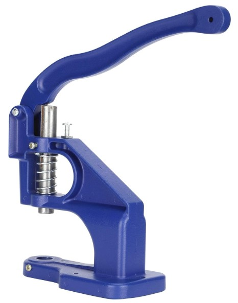
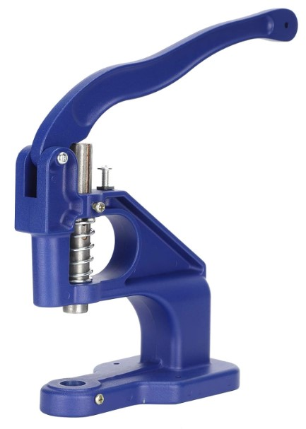
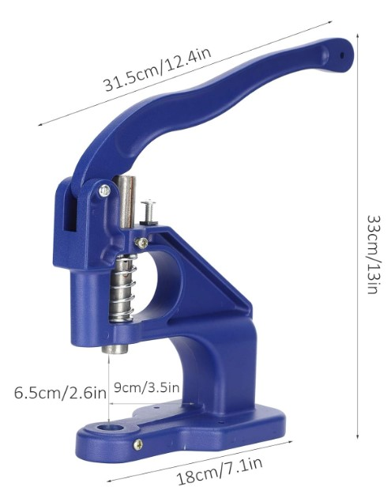
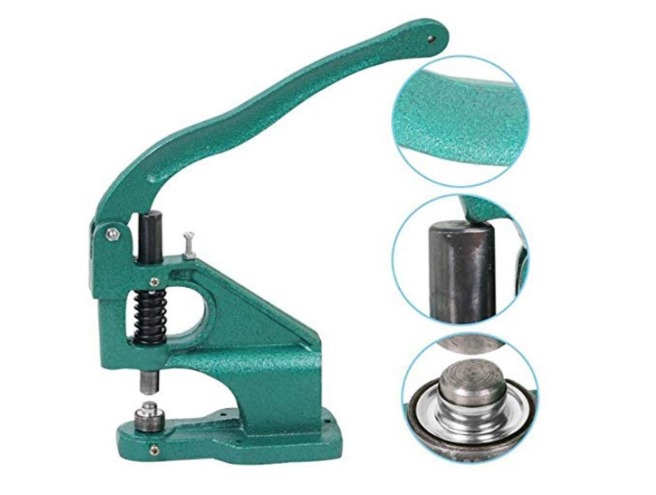
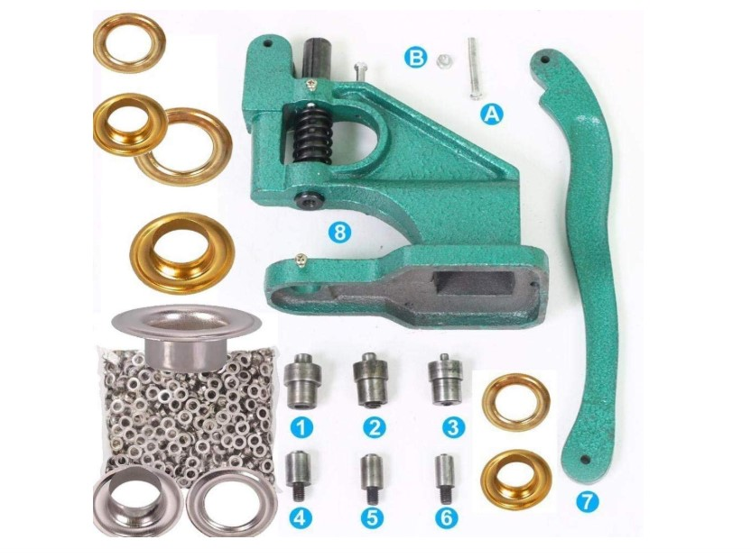
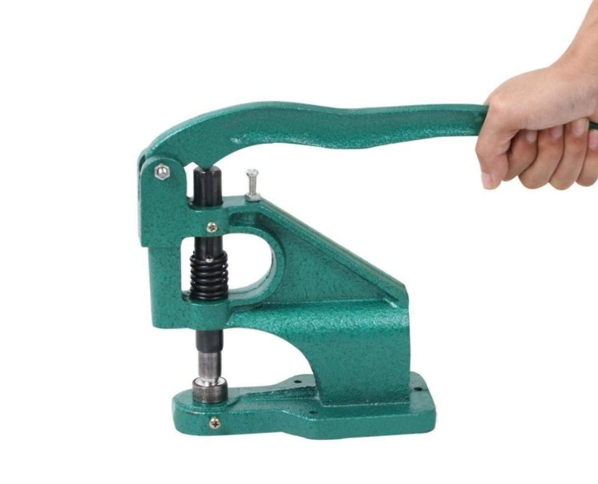

Heavy-duty manual hand press machine designed for accurate and secure fixing of metal eyelets on tarpaulins, fabrics, banners, and sheets.






The Eyelet Hand Press Machine is a manual tool used for fixing metal eyelets neatly and securely onto tarpaulins, banners, fabrics, and various sheet materials. Its sturdy construction ensures precise alignment and consistent results during repeated use.
This machine is widely used in tarpaulin fabrication units, banner printing shops, packaging units, and workshops where reliable eyelet fixing is required.
For Indian workshop conditions, selecting the correct die size for the eyelet is critical for clean fixing. Regular lubrication of the lever mechanism helps maintain smooth operation during continuous daily use.